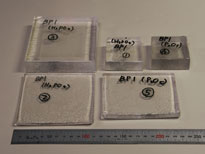

研究テーマ
ＢＰ－１ガラスの開発研究
ECCOで用いるBP-1ガラス飛跡検出器は固体飛跡検出器の一種で，重イオンの入射により生ずる潜在的な放射線損傷部が，化学エッチングにより巨視的なサイズの円錐凹みに成長します。このような性質は絶縁体一般に見られるのですが，感度が高いものはごく一部で，プラスチックの中ではCR-39が，ガラスの中ではBP-1と呼ばれるガラスの感度が際立って高く，群を抜いています。BP-1は米国カリフォルニア大学バークレー校（UCB）の研究者により開発され1988年に報告された無色透明なバリウムリン酸ガラスの一種で，CR-39のようなプラスチックと違って真空や温度変化の影響を殆ど受けないため，宇宙のような厳しい実験環境に適しています。
謎だらけのＢＰ－１ガラス
実は，なぜのBP-1が高感度であるのか，その原因は殆ど全くと言って良いほどわかっていないのです。これは実はプラスチックのCR-39も同様です。
もちろん，重粒子の入射により入射部分が変質して化学反応性が高まり，エッチングで実際に速く溶けることは間違いないのですが，それだけでは現象を言い換えただけです。重粒子の入射部は何が変化しているのか？ エッチング速度はなぜ速くなるのか？ これらが解明されて初めて，BP-1の高感度の理由が分かり，謎が解けたと言えます。
ＢＰ－１ガラスの国内製造
BP-1の謎が解きたい，そう考えて我々は研究を開始しました。プラスチックのCR-39を対象に謎を解くことも面白いのですが，プラスチックは高分子化合物であるため，その研究はBP-1に比べて難しいのではないかと考えました。というのは，プラスチックの性質は組成だけでなくモノマーの重合の仕方にも依存し，そのことを考慮した研究は相当に難しく，ガラスの方がまだ扱いやすいのではないかと思ったのです。
その第一歩がBP-1ガラスの製造です。BP-1はこれまで米国でUCBの研究者が必要なだけ製造してきたため，一般には入手が困難でした。そこで我々は，本邦で初めてと思われるBP-1ガラスの本格的な製造に着手しました。これまでに，我々は（株）オハラの協力を得て，既に報告された性能にかなり近いガラスの製造に成功していますが，まだ一様性がじゅうぶんに高いものの製造には至っていません。
ＢＰ－１ガラスの謎を解くヒント－その１
我々は，BP-1ガラスの謎を解くヒントがないか，あらゆることに注意しています。まず第１に，BP-1ガラスは，P2O5，Na2O，SiO2，BaOから成っていますが，BP-1の感度は特に５％前後という少ない成分であるNa2OとSiO2の量により非常に敏感に変化し，1ポイントも変われば感度は半分以下に下がってしまうのです。これは，BP-1ガラスの構造は，感度が高くなるような特殊の構造を取っていることを意味しています。その構造はどのようなものか，まだわかっていませんが，我々は１つの仮説に辿り着いています。仮説を証明するにはどうしたら良いか，そこに苦心しているところです。
ＢＰ－１ガラスの謎を解くヒント－その２
ヒントの第２として，BP-1ガラスの高感度の理由は主に，重粒子が入射した部分の化学反応性が高いということよりも，むしろ入射しないところの反応性がもともと低いことに依ることが分かりました。ではなぜ，そうなのか？それには，エッチングのメカニズムを知らないといけません。ところが意外にも，一般にガラスのエッチング機構についてはあまり分かっていないらしいことが分かってきました。簡単なことが意外と分かっていないことはままあることで，その典型のような事例でしょう。化学エッチングの機構，特にガラスの場合の機構について，それを明らかにするにはどうしたら良いか，これも今後の課題です。
ＢＰ－１の機構が分かれば．．．
BP-1ガラスの高感度の理由が解明されれば，その知識をもとに，BP-1とはまったく異なる新たな高感度ガラスを設計することが出来るかもしれません。そうすれば，我々はまったく新しい段階の研究へと進むことが出来るかもしれないと思っています。しかしながら，このようなメカニズムの研究はなかなか難しく，明らかにするためには何らかのブレークスルーが必要に思われます。現在のところ，そのような段階に進める時が来るまで，本研究は一時的に中断しています。興味を持ち，この謎を解いてくれる若い力が現れることを我々は期待しています。